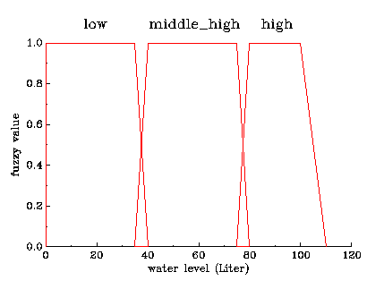
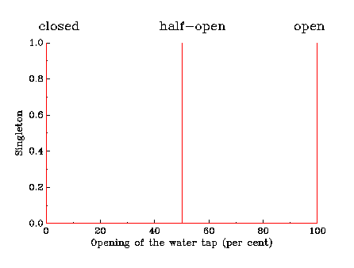

Fuzzy logic is an approach to computing based on "degrees of truth" rather than the usual "true or false" (1 or 0) Boolean logic on which the modern computer is based. The idea of fuzzy logic was first advanced by Dr. Lotfi Zadeh of the University of California at Berkeley in the 1960s. Dr. Zadeh was working on the problem of computer understanding of natural language. Natural language is not easily translated into the absolute terms of 0 and 1. Whether everything is ultimately describable in binary terms is a philosophical question worth pursuing, but in practice much data we might want to feed a computer is in some state in between and so, frequently, are the results of computing.
Fuzzy logic includes 0 and 1 as extreme cases of truth (or "the state of matters" or "fact") but also includes the various states of truth in between so that, for example, the result of a comparison between two things could be not "tall" or "short" but "0.38 of tallness." Fuzzy logic seems closer to the way our brains work.
Fuzzy Control is one field of application of fuzzy. Intention of fuzzy control is to model the behaviour of processes (or characteristics of sth.) with the help of expertise. There exists a simple algorithm for fuzzy control that will cope to most problems. For complex problems the algorithm can be extended. The algorithm is divided in following steps:
- Fuzzyfication
- Inference
- Defuzzyfication
Fuzzyfication
Fuzzyfication means that facts must be transformed to the fuzzy model. In other words, membership functions will assigned to facts that can be measured data, spatial data, etc. First you have to decide how many variables do you need to describe your model. Secondly how many attributes (membership functions) you will need to describe your variable(s)? Thirdly you must set up the membership functions and define the range and graph of its. In SAMT- Fuzzy there are only two possibilties to graph membership functions, namely triangles and trapezes. But this will be sufficient to nearly most problems. At next you have to define the outputs of the fuzzy model. In this tool there is used a simple form to describe outputs, so called singletons. A fuzzy system with singletons ist easy and fast to calculate, so you can use this tool on spatial models. Of course there are a lot of methods to describe outputs, but singletons will be easy to calculate and means no limitation to the model (Little worked sample)
Inference
The inference process is based on an amount of rules. These rules are a significant characteristica for fuzzy control systems and easy to understand. The number of rules depends on the number of membership functions of the inputs. You have to combine every membershipfunction of one input with the membership functions of the other inputs. The rules have the form like this: IF mfi,in1 AND mfj,in2 AND mfk,in3 THEN outputn. Instead of AND there are many other methods, but on the strength of past experiences, the AND- relation will be sufficient to nearly all problems. To implement an OR you must define alternative rules. The inference will proceed the following algorithm:
- At first you should calculate the membership functions (mu) for every input.
- Next you have to calculate the affiliation of the rules. The affiliation of one rules is calculated by the minimum (or product) of the memberships (mu) of the inputs and the validation value (cf). The cf-value can be set in the range of 0 to 1 and it validates the rule. If it is set to 1 it has no influence to the calculation.
- At least calculate the maximum of all rules that have the same output.
In the last partial stage, every output will get a value. Although many outputs will be null there are some outputs with a value greater than null. These values were needed to the defuzzyfication process where you will calculate an exact value. (Little worked sample)
Defuzzyfication
Because of the use of singletons the defuzzyfication will be very simple and fast. Complex methods like mean of maximum or center of gravity have a long calculating time so those methods are adversarial to spatial simulations with large amounts of data. The exact value is calculated as follows:
|
mu1*x 1 + ... + mui*xi |
| o = ---------------------------------- |
| mu1 + ... + mui |
These defuzzyficated values can be plotted as a map or used as inputs for other fuzzy models.(Little worked sample)
Develop a control system for a bathtub
Problem description: There is an empty bathtub (max. volume: 100 l) that has to be filled up with water. We only concentrate to the water level, water temperature is not relevant to this example. The degree of opening of the water tap (in per cent) depends on water level. If the bathtub is empty, the water tap has to be full opened. The higher the water level, the less water has to be add.
Fuzzyfication
1.Step: Characterisation of input variable "water level " and set up of membership functions
|
|
|
 |
| Water level |
|
| low |
0 l - 40 l |
| middle_high |
40 l - 80 l |
| high |
80 l - 100 l |
|
|
2.Step: Characterisation output variable "Opening of water tap " and plot of singletons
|
|
|
 |
| Opening of water tap |
|
| closed |
0 % |
| half- open |
50 % |
| open |
100 % |
|
|
Inference
Set up the rules
For each membership function has to be set up a rule. If you have more than one input, you must combine the membership functions of different inputs. But in this example there are only 3 rules to be set up. For example, if you have 2 inputs each with 3 membership functions, you will get 9 Rules to be set up.
| Regel |
Water level |
Opening of water tap |
| 1 |
IF low |
THEN open |
| 2 |
IF middle_high |
THEN half-open |
| 3 |
IF high |
THEN closed |
We will calculate the fuzzy modell for 3 values:
v1=20l
v2=38l
v3=90l
| Value |
mu of
Rule1
(open) |
mu of
Rule2
(half-open) |
mu of
Rule3
(closed) |
Opening of
water tap |
| v1=20l |
1.0 |
0 |
0 |
100% |
| v2=38l |
0.4 |
0.6 |
0 |
70% |
| v3=90l |
0 |
0 |
1 |
0% |
Back to Manual